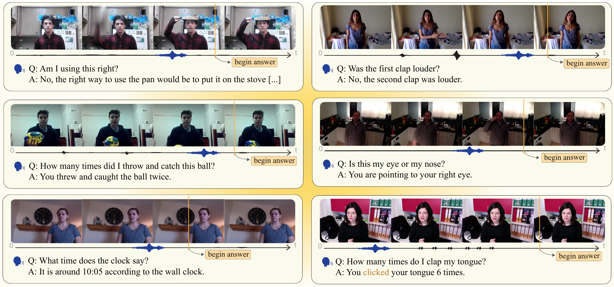
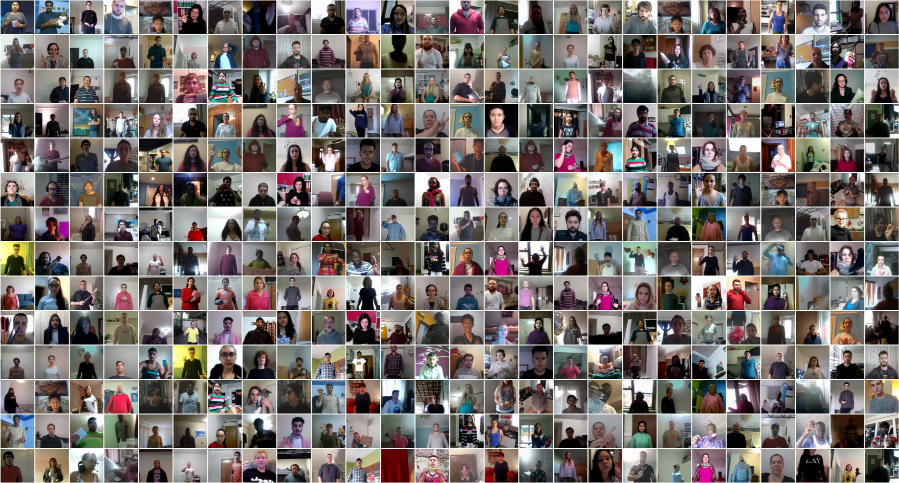
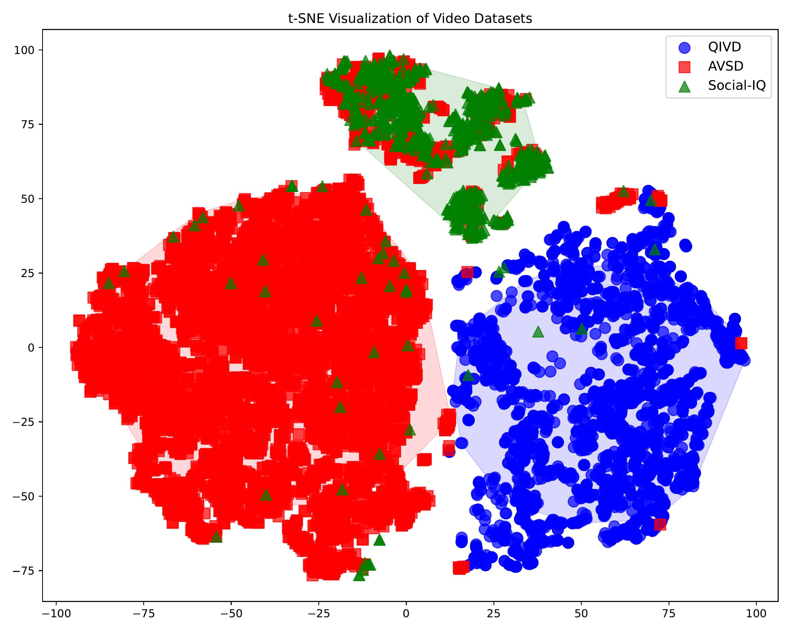
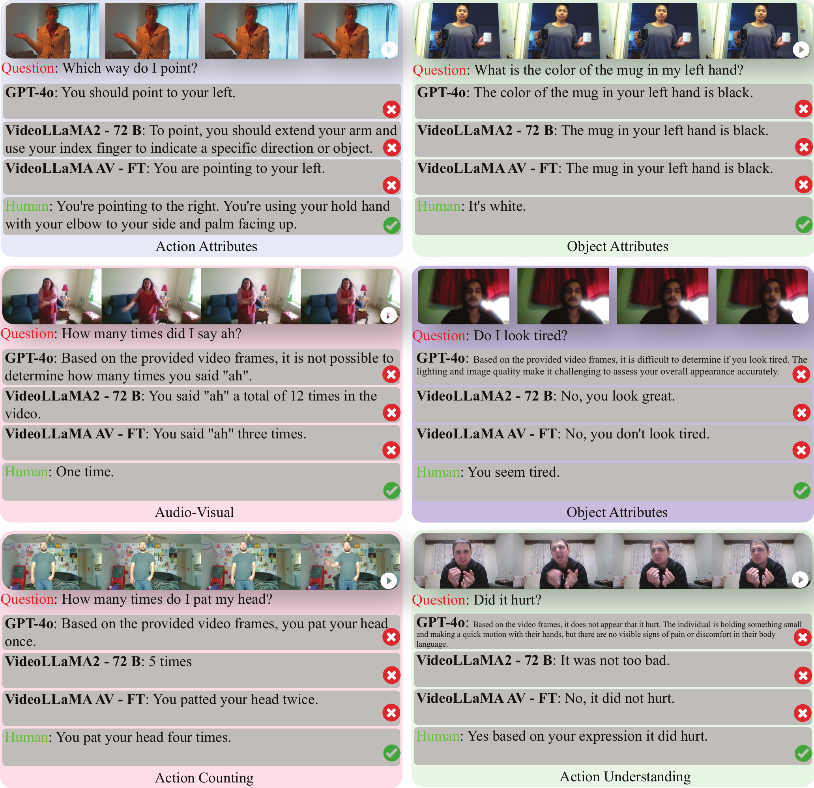
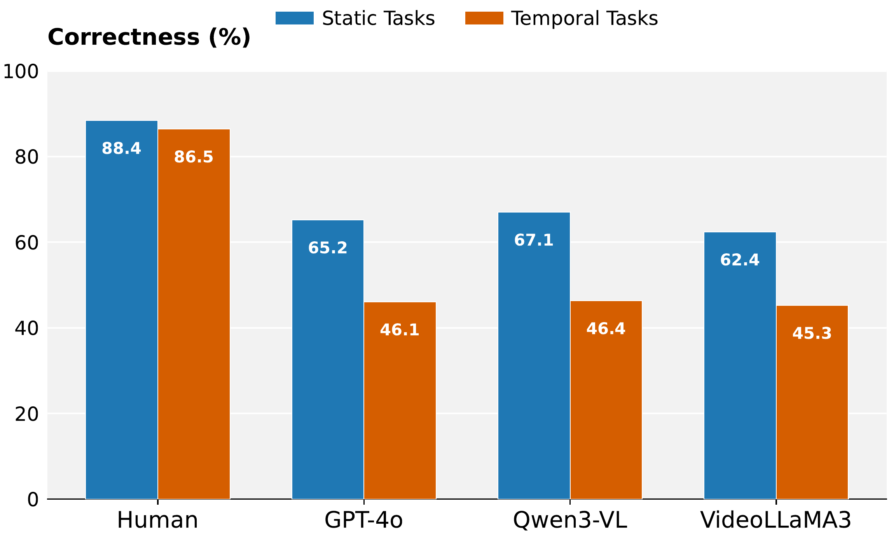
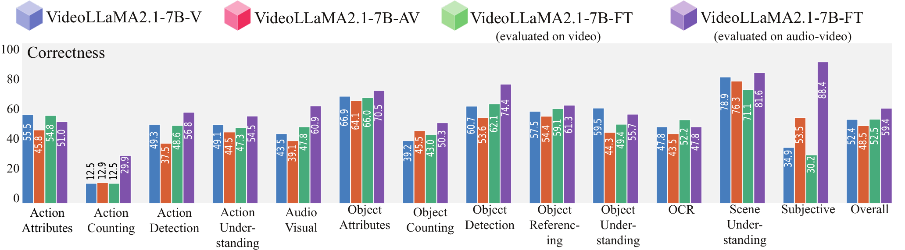
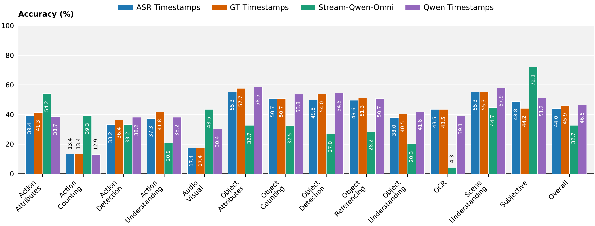
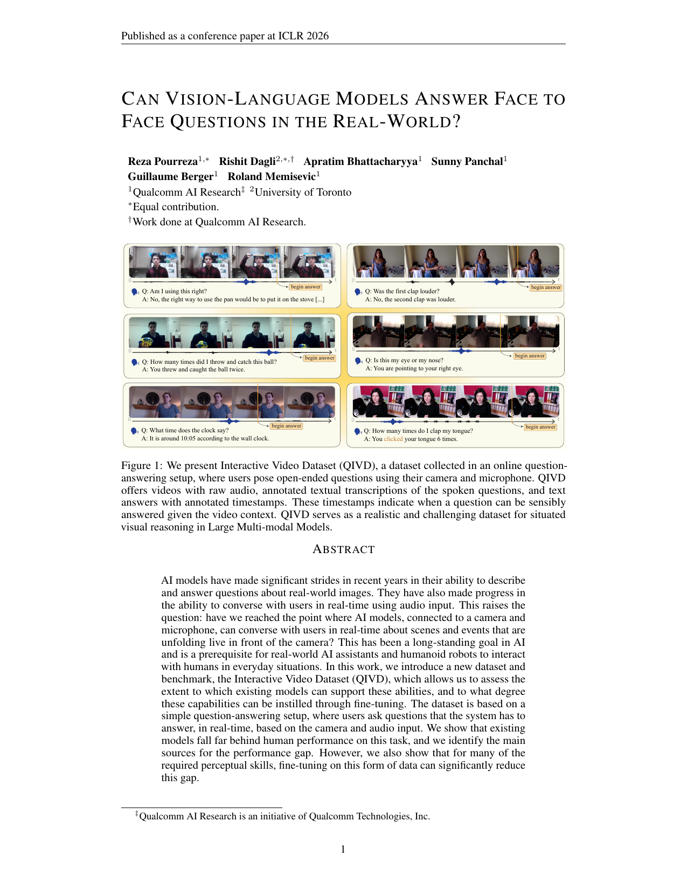

TL;DR: We present QIVD, a video-audio-language model for situated reasoning and a benchmark for situated AI where models must interpret real-time visual and audio inputs to answer face-to-face questions.

QIVD features videos where users pose open-ended questions using their camera and microphone. Each instance includes the video with audio, transcribed question, answer, and annotated timestamp indicating when the question can be sensibly answered.
Our benchmark contains diverse real-world videos with audio where users ask face-to-face questions about visual scenes, requiring models to understand spatial relationships, temporal dynamics, and fine-grained visual details.
Abstract
QIVD Benchmark
Example from QIVD showing the situated question-answering setup with streaming video input.
Dataset Statistics
Dataset Diversity
The videos exhibit substantial variation in environments, participants, objects, actions, lighting conditions, and camera angles:
QIVD vs. Other Benchmarks
QIVD is the only benchmark featuring face-to-face interaction with manual annotation, audio, and interactive question-answering:
| Benchmark | #Videos | #QA-Pairs | Annotation | Audio | Subtitle | Interactive | Face-to-Face |
|---|---|---|---|---|---|---|---|
| AVSD (DSTC7) | 11,156 | ~111,560 | Manual | ✓ | ✗ | ✓ | ✗ |
| KnowIT VQA | 207 | 24,282 | Manual | ✓ | ✓ | ✗ | ✗ |
| LifeQA | 275 | 2,326 | Manual | ✓ | ✓ | ✗ | ✗ |
| How2QA | 9,035 | 44,007 | Manual | ✓ | ✓ | ✓ | ✗ |
| MedVidQA | 899 | 3,010 | Manual | ✓ | ✓ | ✓ | ✗ |
| Social-IQ | 1,250 | 7,500 | Manual | ✓ | ✗ | ✗ | ✓ |
| Video-MME | 900 | 2,700 | Manual | ✓ | ✓ | ✗ | ✗ |
| CodeVidQA | 2,104 | 2,104 | Automatic | ✓ | ✓ | ✓ | ✗ |
| Ego4D Social Interactions | 667 | task-specific | Manual | ✓ | ✗ | ✓ | ✓ |
| TVQA | 21,793 | 152,545 | Manual | ✓ | ✓ | ✗ | ✗ |
| NExT-GQA | 1,557 | 10,531 | Manual | ✓ | ✓ | ✓ | ✗ |
| STAR | 22,000 | 60,000 | Automatic | ✓ | ✗ | ✓ | ✗ |
| VStream-QA | 32 | 3,500 | Automatic | ✓ | ✗ | ✓ | ✗ |
| QIVD (Ours) | 2,900 | 2,900 | Manual | ✓ | ✓ | ✓ | ✓ |

t-SNE visualization: QIVD forms a distinct cluster, demonstrating substantially novel visual-semantic content compared to AVSD and Social-IQ
Difficulty of Our Benchmark
- Deictic reference errors – Misinterpreting pointing gestures and spatial references
- Action counting failures – Inability to track and count repeated actions accurately
- Temporal confusion – Failing to understand when events occur in sequence
- Audio-visual misalignment – Difficulty integrating audio cues with visual context

Examples of simple questions that models fail to answer correctly. These everyday scenarios remain challenging despite model sophistication.
The performance gap (87.33% human vs. 60.07% best model) reveals fundamental limitations in current approaches to multi-modal integration. Models are optimized for static scene understanding rather than dynamic temporal reasoning required for real-time interaction.
Our Model and Experiments
- Process streaming inputs in real-time
- Detect when a question has been asked
- Determine when sufficient context is available to answer
- Generate accurate responses at the optimal moment
Performance Across Categories

Models struggle with action counting, audio-visual integration, and object referencing

All models show >19% performance drop on temporal tasks vs. static tasks
Impact of Audio and When-to-Answer

Our fine-tuned VideoLLaMA2.1-7B-AV shows dramatic gains when using audio+video

Our Stream-Qwen-Omni: Accurate when-to-answer timing substantially improves performance
Key Findings:
- Our Stream-Qwen-Omni approach with fine-tuning produces largest gains in action counting (+16.96%), action understanding (+10.00%), and audio-visual tasks (+17.39%)
- End-to-end multimodal training with our approach enables emergent capabilities beyond simple feature concatenation
- Our Stream-Qwen-Omni's accurate when-to-answer detection is critical—models answering prematurely perform poorly
Leaderboard
Comprehensive evaluation of state-of-the-art vision-language models on QIVD. Click column headers to sort.
Streaming Setup
| Model | Corr. ↑ | BERT ↑ | METEOR ↑ | BLEU ↑ | ROUGE-L ↑ |
|---|---|---|---|---|---|
| Chat-UniVi | 34.66 (±47.60) | 89.94 (±3.56) | 37.47 (±23.53) | 6.08 (±16.44) | 28.45 (±22.41) |
| InstructBLIP | 35.03 (±47.72) | 82.19 (±3.00) | 4.35 (±6.53) | 0.02 (±0.73) | 9.99 (±14.40) |
| LLaMA-VID | 39.41 (±48.87) | 90.51 (±3.56) | 37.18 (±23.25) | 5.84 (±16.39) | 29.80 (±22.03) |
| LLaVA-NeXT | 19.45 (±39.59) | 85.29 (±3.24) | 22.85 (±15.72) | 1.38 (±8.68) | 11.64 (±15.21) |
| Video-ChatGPT | 32.45 (±46.83) | 90.53 (±3.78) | 38.14 (±24.78) | 7.58 (±19.46) | 31.09 (±24.45) |
| VideoChat | 3.69 (±18.85) | 85.05 (±2.77) | 23.48 (±15.29) | 1.08 (±6.47) | 12.22 (±12.29) |
| VideoChat2 | 44.66 (±49.72) | 91.13 (±3.88) | 45.49 (±26.63) | 11.35 (±23.38) | 41.38 (±26.04) |
| Video-LLaVA | 20.28 (±40.21) | 87.77 (±3.37) | 27.15 (±18.88) | 1.98 (±9.73) | 19.31 (±17.63) |
| VideoLLaMA | 30.76 (±46.16) | 89.50 (±4.56) | 39.05 (±26.06) | 7.62 (±18.87) | 30.84 (±24.83) |
| VideoLLaMA2-7B | 43.34 (±49.56) | 91.18 (±4.18) | 47.20 (±27.92) | 13.93 (±26.57) | 40.63 (±27.22) |
| VideoLLaMA2-72B | 46.52 (±49.89) | 91.42 (±5.68) | 46.60 (±28.88) | 14.04 (±27.41) | 41.71 (±28.50) |
| VideoLLaMA3-7B | 50.59 (±50.01) | 90.92 (±5.34) | 45.20 (±27.14) | 11.21 (±23.54) | 40.55 (±26.55) |
| VideoLLM-online | 17.97 (±38.40) | 76.60 (±29.79) | 27.36 (±22.11) | 2.81 (±10.28) | 20.39 (±19.30) |
| Flash-VStream | 44.28 (±49.68) | 89.85 (±3.73) | 28.95 (±24.21) | 4.17 (±15.38) | 27.05 (±24.56) |
| Qwen2.5-VL-7B | 44.90 (±49.75) | 87.17 (±2.71) | 34.95 (±20.21) | 3.89 (±10.62) | 26.52 (±23.25) |
| Qwen2.5-Omni-7B | 43.97 (±49.64) | 86.65 (±1.95) | 33.45 (±17.12) | 2.77 (±5.94) | 20.57 (±12.71) |
| Qwen3-VL-8B | 53.72 (±49.87) | 87.08 (±3.08) | 33.90 (±22.11) | 5.29 (±12.70) | 31.53 (±27.10) |
Overall results of different models on the QIVD leaderboard. The best-performing model in each category is in-bold, and the second best is underlined. Corr. represents the correctness score calculated by the LLM judge.
Offline Setup
| Model | Corr. ↑ | BERT ↑ | METEOR ↑ | BLEU ↑ | ROUGE-L ↑ |
|---|---|---|---|---|---|
| Chat-UniVi | 40.79 (±49.15) | 90.50 (±3.49) | 40.02 (±23.64) | 7.24 (±18.29) | 31.22 (±22.70) |
| InstructBLIP | 39.14 (±48.81) | 82.03 (±3.13) | 4.54 (±6.81) | 0.07 (±1.70) | 10.72 (±14.56) |
| LLaMA-VID | 43.00 (±49.52) | 90.78 (±3.32) | 37.55 (±22.42) | 5.42 (±15.59) | 29.82 (±21.12) |
| LLaVA-NeXT | 22.66 (±41.87) | 85.78 (±3.40) | 24.50 (±16.66) | 1.67 (±9.53) | 13.22 (±16.54) |
| Video-ChatGPT | 36.59 (±48.18) | 91.01 (±3.78) | 40.59 (±25.20) | 9.07 (±21.51) | 33.58 (±25.11) |
| VideoChat | 3.52 (±18.42) | 85.20 (±2.72) | 24.39 (±15.51) | 1.03 (±5.52) | 12.54 (±12.11) |
| VideoChat2 | 50.34 (±50.01) | 91.52 (±3.81) | 47.93 (±26.62) | 12.43 (±24.04) | 43.87 (±25.97) |
| Video-LLaVA | 15.00 (±35.71) | 83.38 (±1.85) | 2.90 (±5.27) | 0.00 (±0.00) | 15.66 (±16.00) |
| VideoLLaMA | 35.93 (±47.99) | 90.45 (±4.15) | 43.88 (±25.81) | 9.86 (±21.99) | 34.93 (±25.09) |
| VideoLLaMA2-7B | 50.07 (±50.01) | 91.71 (±4.15) | 51.08 (±27.91) | 16.41 (±28.98) | 43.97 (±27.56) |
| VideoLLaMA2-72B | 50.83 (±50.00) | 92.29 (±4.35) | 51.13 (±27.95) | 16.12 (±28.86) | 45.76 (±28.06) |
| VideoLLaMA3-7B | 56.38 (±49.60) | 91.63 (±4.24) | 48.56 (±26.81) | 12.72 (±24.92) | 43.84 (±26.11) |
| VideoLLM-online | 23.62 (±42.48) | 88.45 (±3.55) | 33.08 (±21.42) | 3.99 (±12.35) | 25.26 (±19.97) |
| Flash-VStream | 49.59 (±50.01) | 90.48 (±3.57) | 31.49 (±24.88) | 5.05 (±17.12) | 29.90 (±24.98) |
| Qwen2.5-VL-7B | 50.62 (±50.00) | 87.58 (±2.63) | 37.37 (±20.46) | 4.66 (±11.67) | 29.44 (±24.18) |
| Qwen2.5-Omni-7B | 45.90 (±49.84) | 86.73 (±1.93) | 33.98 (±17.22) | 2.87 (±5.96) | 20.98 (±12.71) |
| Qwen3-VL-8B | 60.07 (±48.98) | 87.58 (±3.00) | 36.72 (±22.77) | 6.64 (±14.11) | 35.89 (±28.07) |
| Gemini-2.5-Flash | 58.07 (±49.35) | 90.43 (±4.12) | 43.07 (±25.20) | 8.33 (±20.68) | 36.05 (±26.01) |
| GPT-4o | 58.76 (±49.24) | 89.36 (±15.25) | 51.18 (±27.32) | 15.72 (±28.27) | 42.55 (±28.17) |
| Human (subset) | 87.33 (±33.32) | 93.01 (±3.89) | 53.21 (±25.22) | 17.40 (±30.90) | 49.76 (±25.18) |
Overall results of different models on the QIVD leaderboard. The best-performing model in each category is in-bold, and the second best is underlined. Corr. represents the correctness score calculated by the LLM judge.
Paper

Can Vision-Language Models Answer Face to Face Questions in the Real-World?
Qualcomm AI Research, University of Toronto
BibTeX
@misc{pourreza2025visionlanguagemodelsanswerface,
title={Can Vision-Language Models Answer Face to Face Questions in the Real-World?},
author={Reza Pourreza and Rishit Dagli and Apratim Bhattacharyya and Sunny Panchal and Guillaume Berger and Roland Memisevic},
year={2025},
eprint={2503.19356},
archivePrefix={arXiv},
primaryClass={cs.CV},
url={https://arxiv.org/abs/2503.19356},
}